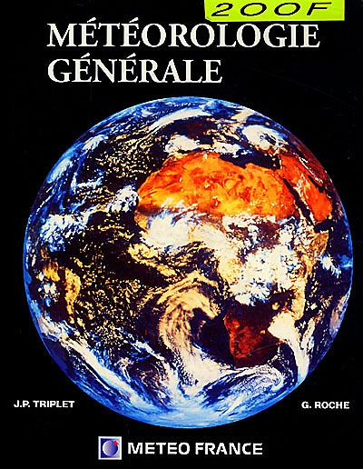
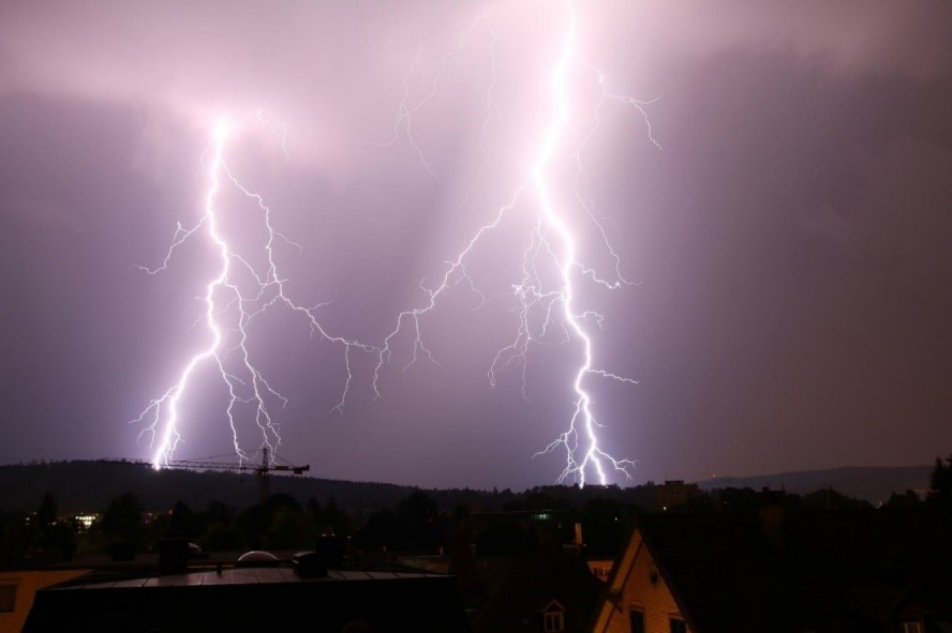
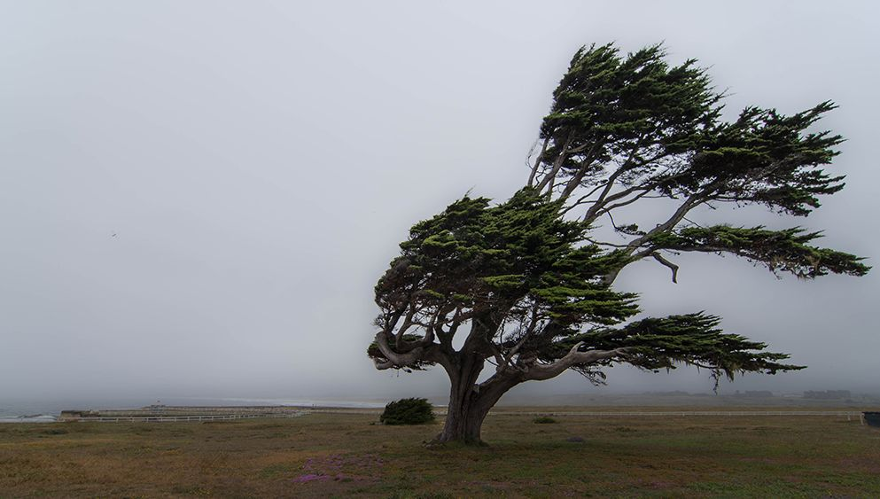
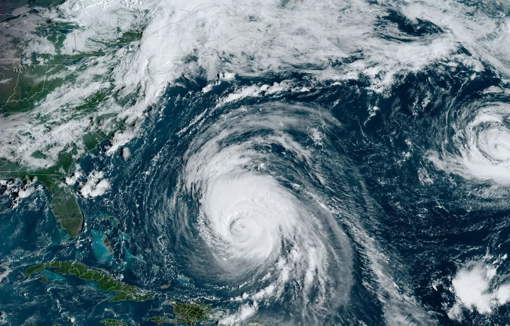

Here you will learn the basics of General Meteorology, as well as the basics of atmospheric pressure, etc...

Here you can learn the basics about thunderstorms, how they form and the damage they cause.

Here you will learn about the basics of clouds, their classifications and the associated weather.

Here you will learn about the basics of meteorological fronts and the phenomena they are associated with.

Here you can learn about wind in weather forecasting, how it forms and the damage it can cause.

Here you can find out more about Extreme Phenomena, their causes and the damage they cause.